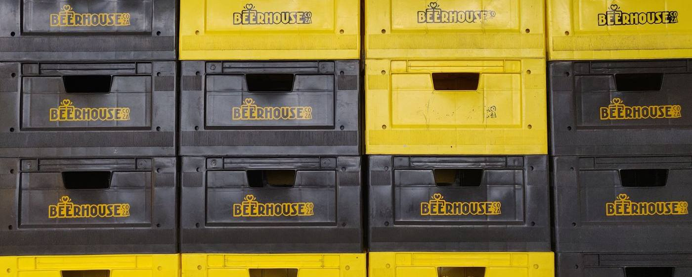

« Les clients écrivent le soir, personne ne répond. »
Les messages de 21 h sont lus le lendemain. Le client a déjà acheté ailleurs.
Agent WhatsApp 24 h/24Intelligence artificielle · Automatisation · Systèmes
Kassio conçoit et déploie des agents IA, des automatisations et des systèmes de gestion qui relient vos clients, vos équipes et vos chiffres. Construits à Abidjan, autour de votre façon de travailler.
+18 % de commandes cette semaine
Visualisation illustrative, non reliée à des données de production.
Ce qu'on règle
Pas de projet IA pour le principe. On part de ce qui vous coûte des ventes ou du temps chaque semaine, et on construit la brique qui le règle.
« Les clients écrivent le soir, personne ne répond. »
Les messages de 21 h sont lus le lendemain. Le client a déjà acheté ailleurs.
Agent WhatsApp 24 h/24« On ressaisit tout entre Excel, la caisse et WhatsApp. »
Les mêmes commandes sont tapées deux ou trois fois, avec des erreurs à chaque étape.
Automatisation« Je découvre mes chiffres à la fin du mois. »
Stock, marge, créances : quand le problème apparaît, il est déjà trop tard pour agir.
Tableaux de bord« Les devis partent, puis plus de nouvelles. »
Personne n'a le temps de relancer. Des ventes presque gagnées s'évaporent.
Relances automatiquesSolutions
Chaque brique fonctionne seule. Reliées entre elles, elles forment un système où chaque message alimente vos fiches clients, votre stock et vos chiffres.
Des agents qui répondent, qualifient et préparent le travail, sous votre contrôle.
Vos outils se parlent. Les tâches répétées tournent seules, avec un historique de chaque action.
Un système de gestion à votre mesure et des chiffres fiables pour décider.
Pas de tarif surprise. Diagnostic de 30 minutes offert, puis devis fixe sous 48 h, sans engagement. Les abonnements des outils sont indiqués à part.
Demander un devisKassio Demo Studio
Trois démonstrations jouées dans votre navigateur. Rien n'est envoyé, aucune donnée réelle n'est utilisée.
Tout se connecte
Ce que l'agent vous apprend
Chaque conversation est classée : prix, délai, disponibilité, confiance. Chaque semaine, vous voyez ce qui bloque vraiment, et on ajuste votre offre, vos prix ou vos messages.
Recommandation : 6 objections « prix » sur 10 portent sur la livraison. Proposez la livraison offerte dès 300 000 FCFA à Cocody et Riviera.
Vos agents
Chaque agent a une mission, des données, des actions autorisées et une limite claire. Le matin, vous recevez ce qui a été fait et ce qui attend votre décision.
Répond aux clients et prend les commandes.
Repère des entreprises cibles et prépare vos messages.
Met à jour vos chiffres et signale ce qui dérape.
Relance les devis, prépare les factures, range les documents.
La règle : un agent prépare, vous décidez. Rien n'est publié, envoyé ou payé sans votre accord.
Réalisations
Kassio fait d'abord tourner ses agents sur sa propre activité. Les prototypes ci-contre montrent ce qu'on construit pour un commerce, un institut ou un atelier : ils sont fictifs et signalés comme tels.
La prospection, les validations et le bilan de Kassio sont faits par ces mêmes agents. Chaque matin et chaque soir, le travail arrive sur mon téléphone, et rien ne part sans mon accord.
Méthode
Un engagement à la fois. Chaque étape se termine par quelque chose que vous pouvez voir et valider.
Vous montrez comment vous travaillez. On repère ce qui vous fait perdre le plus de temps ou de ventes.
Ce qui sera livré, la date, le prix fixe, et le chiffre qu'on doit faire bouger.
Testé sur vos vrais messages et vos vrais fichiers, avec votre équipe, avant la mise en service.
On suit les résultats, on corrige, et on ajoute la brique suivante si elle vaut le coup.
Questions
Une autre question ? Écrivez sur WhatsApp, la réponse arrive dans la journée.
Il ne répond qu'à partir de vos informations : vos prix, votre stock, vos règles. Quand il ne sait pas, il passe la main à vous ou à votre équipe. Vous relisez ses réponses pendant les premières semaines.
Non. On utilise un numéro WhatsApp Business, le vôtre ou un nouveau, avec les outils officiels de WhatsApp.
Oui, c'est même recommandé. On commence par la brique qui rapporte le plus vite, souvent l'agent WhatsApp ou une relance automatique, puis on relie les autres si elles valent le coup.
WhatsApp Business, n8n pour les automatisations, Power BI pour les tableaux de bord, Odoo ou un développement sur mesure pour l'ERP, et vos fichiers Excel ou Google Sheets existants. L'outil est un moyen : on choisit celui qui convient à votre activité.
Ça dépend de la brique et de votre volume. Après le diagnostic de 30 minutes, vous recevez un devis fixe sous 48 h. Les abonnements des outils (WhatsApp, hébergement) sont indiqués à part.
Vous décidez qui voit quoi. Les accès sont nominatifs, les données restent les vôtres, et on peut tout vous rendre si vous arrêtez.
On part de vos habitudes actuelles et on forme l'équipe sur ses vraies tâches. Une reprise à la main reste toujours possible.
Diagnostic offert
Montrez-moi comment vous travaillez. En 30 minutes, au téléphone ou à votre bureau à Abidjan, je vous montre ce qu'un agent peut prendre en charge.
| Client | Demande | Objection | Statut |
|---|---|---|---|
| AKAwa K. | 40 m² carrelage, Cocody | prix | vendu |
| BTBakary T. | 12 sacs de ciment | délai | rappel demain 8 h |
| CYChantier Yao | Devis plomberie complet | confiance | gérant à rappeler |
Chaque lundi, vous recevez ce résumé et les 3 objections les plus fréquentes, avec une proposition pour y répondre.
 Prospection
ProspectionVous relisez, vous envoyez vous-même, puis vous répondez « envoyé » à l'agent : il programme la relance et compte vos rendez-vous de la semaine.

Tableau de bord| Alerte du matin | Action proposée |
|---|---|
| Stock d'eau minérale : 4 jours restants | Commander 300 packs avant jeudi |
| Marge en baisse sur les jus | Revoir le prix de 2 références |
 Site + assistant
Site + assistantSoins, coiffure et onglerie. Réservez en 1 minute, payez avec Wave ou Orange Money.
RéserverLe site se charge vite sur téléphone, apparaît sur Google, et l'assistant transforme les visiteurs en rendez-vous sur votre WhatsApp.
 ERP sur mesure
ERP sur mesure| Commande | Client | Montant | Étape |
|---|---|---|---|
| CMD-0418 | Hôtel Lagune | 2 350 000 | fabrication |
| CMD-0419 | M. Ouattara | 480 000 | acompte attendu |
| CMD-0420 | École Les Palmiers | 1 120 000 | livrée · facturée |
Une commande crée automatiquement la fiche de fabrication, réserve le stock et prépare la facture. Vos fichiers Excel actuels sont repris au démarrage.
Autres exemples : rapport des ventes chaque lundi, copie automatique des commandes vers la comptabilité, rappel des factures impayées.